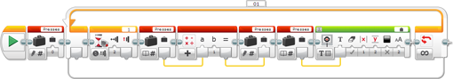

					<table cellpadding="0" cellspacing="0" border="0"><tbody><tr><td>
	
						<h1>变量模块<a name="top"></a></h1>
		<div id="block_697" class="block blockHeader">
				<table cellspacing="0" cellpadding="0" border="0">
			<tbody><tr>
				<td valign="top" class="image"></td>
				<td valign="top" class="description"><div class="text-wrapper">变量模块使您可以在程序中读取或写入变量。还可以创建新变量并进行命名。<br>
<br>
变量是 EV3 程序块内存中可以存储数据值的位置。可以写入变量以存储数据值。在程序后面部分中，可以从变量进行读取以访问存储的值。</div></td>
			</tr>
		</tbody></table>
			</div>
	<div id="block_702" class="block blockStep">
		<div class="title"></div>
		<div class="description">每个变量都具有类型和名称。这些不同类型有数字、逻辑、文本、数字排列和逻辑排列。可以选择变量的名称，这用于标识变量。<br>
<br>
有关变量的不同类型的更多信息，请参见<a href="./index.html?id=DataTypes">数据类型</a>。<br>
<br>
在程序运行期间，可以更改变量的值。每次写入变量时，任何以前的值都会擦除并替换为新值。例如，可以使用名为“Max Light”的变量跟踪机器人迄今为止从颜色传感器测量的最高光线强度。每次机器人检测到较高值时，可以将新值写入“Max Light”变量。</div>
	</div>
	<div id="block_698" class="block blockChaptor">
		<div class="title"><a name="AddingANewVariable" style="position:relative; top:-10px;"></a>添加新变量</div>
		<div class="description"><br>
<br>
 模式选择器 <br>
 变量选择器<br>
 变量输入<br>
<br>
要将新变量添加到项目，请执行以下操作：</div>
	</div>
	<div id="block_699" class="block blockTable bullets">
		<table class="blockTable">
		
<tbody><tr><td>1.</td><td>插入或选择变量模块。 </td></tr><tr><td>2.</td><td>使用模式选择器选择“写入”模式。 </td></tr><tr><td>3.</td><td>选择变量类型（数字、逻辑、文本、数字排列或逻辑排列）。 </td></tr><tr><td>4.</td><td>单击模块顶部的模块文本字段并选择“添加变量”。“新变量”对话框会出现，如下所示。 </td></tr>		</tbody></table>
	</div>
	<div id="block_700" class="block blockStep">
		<div class="title"></div>
		<div class="description"></div>
	</div>
	<div id="block_701" class="block blockTable bullets">
		<table class="blockTable">
		
<tbody><tr><td>5.</td><td>在“新变量”对话框中，为变量输入名称并单击“确定”。变量名称可以是单个字母、一个单词、几个单词或任何字母和数字序列。 </td></tr>		</tbody></table>
	</div>
	<div id="block_703" class="block blockTip">
		<div class="title">提示和技巧</div>
		<div class="boxContent">
			<div class="description"></div>
			<div id="block_705" class="block blockTable bullets">
		<table class="blockTable">
		
<tbody><tr><td>•</td><td>选择较短变量名称可以在程序中使用变量时更方便地查看整个变量名称。 </td></tr><tr><td>•</td><td>选择的名称应有助于记住变量含义以及与程序中其他变量的不同之处。 </td></tr><tr><td>•</td><td>添加了某个变量之后，该变量可在项目中的任何程序中使用。 </td></tr>		</tbody></table>
	</div>
		</div>
	</div>
	<div id="block_706" class="block blockTable bullets">
		<table class="blockTable">
		
<tbody><tr><td>6.</td><td>添加了变量之后，可以在“写入”模式中使用变量模块为变量输入初始<a href="./index.html?id=Variable#valueIn">值</a>。 </td></tr>		</tbody></table>
	</div>
	<div id="block_707" class="block blockChaptor">
		<div class="title"><a name="WritingAVariable" style="position:relative; top:-10px;"></a>写入变量</div>
		<div class="description"><br>
<br>
 模式选择器 <br>
 变量名称<br>
 输入</div>
	</div>
	<div id="block_1358" class="block blockMode">
		<div class="title"><a name="Mode_WriteText" style="position:relative; top:-10px;"></a>写入 <a name="Mode_WriteNumeric" style="position:relative; top:-10px;"></a>  <a name="Mode_WriteBoolean" style="position:relative; top:-10px;"></a>  <a name="Mode_WriteNumericArray" style="position:relative; top:-10px;"></a>  <a name="Mode_WriteBooleanArray" style="position:relative; top:-10px;"></a></div>
		<div class="description">“写入”模式使您可以选择已添加到程序的变量（请参见<a href="./index.html?id=Variable#AddingANewVariable">添加新变量</a>）并在其中存储值。</div>
	</div>
	<div id="block_1359" class="block blockStep">
		<div class="title"></div>
		<div class="description">要写入变量，请执行以下操作：</div>
	</div>
	<div id="block_708" class="block blockTable bullets">
		<table class="blockTable">
		
<tbody><tr><td>1.</td><td>使用模式选择器选择“写入”模式。 </td></tr><tr><td>2.</td><td>选择变量的类型。 </td></tr><tr><td>3.</td><td>单击模块文本字段可显示弹出菜单。 </td></tr><tr><td>4.</td><td>选择要使用的变量的名称。 </td></tr>		</tbody></table>
	</div>
	<div id="block_709" class="block blockTip">
		<div class="title">提示和技巧</div>
		<div class="boxContent">
			<div class="description">在从弹出菜单选择变量名称之前，必须从模式选择器选择变量类型。弹出菜单仅列出与所选类型匹配的变量。</div>
				</div>
	</div>
	<div id="block_711" class="block blockTable bullets">
		<table class="blockTable">
		
<tbody><tr><td>5.</td><td>现在可以使用<a href="./index.html?id=Variable#valueIn">值</a>输入将值存储到变量中。可以将值直接输入到<a href="./index.html?id=Variable#valueIn">值</a>输入中，也可以使用<a href="./index.html?id=DataWires">数据线</a>。 </td></tr>		</tbody></table>
	</div>
	<div id="block_712" class="block blockTip">
		<div class="title">提示和技巧</div>
		<div class="boxContent">
			<div class="description">可以按所需次数写入变量，但是只会保留最后一个值。写入变量会擦除以前的变量值并将其替换为新值。</div>
				</div>
	</div>
	<div id="block_714" class="block blockChaptor">
		<div class="title"><a name="ReadingAVariable" style="position:relative; top:-10px;"></a>读取变量</div>
		<div class="description"><br>
<br>
 模式选择器 <br>
 变量名称<br>
 输出</div>
	</div>
	<div id="block_1361" class="block blockMode">
		<div class="title"><a name="Mode_ReadText" style="position:relative; top:-10px;"></a>读取 <a name="Mode_ReadNumeric" style="position:relative; top:-10px;"></a>  <a name="Mode_ReadBoolean" style="position:relative; top:-10px;"></a>  <a name="Mode_ReadNumericArray" style="position:relative; top:-10px;"></a>  <a name="Mode_ReadBooleanArray" style="position:relative; top:-10px;"></a></div>
		<div class="description">“读取”模式使您可以选择已添加到程序的变量（请参见<a href="./index.html?id=Variable#AddingANewVariable">添加新变量</a>）并获取其中存储的值。</div>
	</div>
	<div id="block_1360" class="block blockStep">
		<div class="title"></div>
		<div class="description">要读取变量，请执行以下操作：</div>
	</div>
	<div id="block_715" class="block blockTable bullets">
		<table class="blockTable">
		
<tbody><tr><td>1.</td><td>使用模式选择器选择“读取”模式和变量的类型。 </td></tr><tr><td>2. <a name="name" style="position:relative; top:-10px;"></a></td><td>单击模块顶部的文本字段以显示弹出菜单，并选择要使用的变量的名称。 </td></tr>		</tbody></table>
	</div>
	<div id="block_716" class="block blockTip">
		<div class="title">提示和技巧</div>
		<div class="boxContent">
			<div class="description">在从弹出菜单选择变量名称之前，必须从模式选择器选择变量类型。弹出菜单仅列出与所选类型匹配的变量。</div>
				</div>
	</div>
	<div id="block_718" class="block blockTable bullets">
		<table class="blockTable">
		
<tbody><tr><td>3.</td><td>现在可以从<a href="./index.html?id=Variable#valueOut">值</a>输出获取变量的值，并通过<a href="./index.html?id=DataWires">数据线</a>在程序中使用此值。 </td></tr>		</tbody></table>
	</div>
	<div id="block_719" class="block blockTip">
		<div class="title">提示和技巧</div>
		<div class="boxContent">
			<div class="description">如果读取从未向其写入值的变量，则结果对于数字变量会为 0，对于逻辑变量为“伪”，对于文本变量为空文本，对于数字排列或逻辑排列变量为空排列。</div>
				</div>
	</div>
	<div id="block_721" class="block blockChaptor">
		<div class="title"><a name="ExamplesUsingVariables" style="position:relative; top:-10px;"></a>变量使用示例</div>
		<div class="description"></div>
	</div>
	<div id="block_722" class="block blockExample">
		<div class="title">示例 1：存储值并在以后使用它</div>
		<div class="image"></div>
		<div class="description">此程序在“写入”模式中使用变量模块将来自颜色传感器的数据值存储在名为“Light”的变量中，然后在“读取”模式中使用变量获取该值并在程序的后面部分中使用它。<br>
<br>
此程序旨在使机器人向外驱动并后退。在后退过程中，机器人会在至少与启动时所处的颜色一样深的颜色上停止。</div>
	</div>
	<div id="block_723" class="block blockTip">
		<div class="title">提示和技巧</div>
		<div class="boxContent">
			<div class="description">上面的程序还可以使用较长<a href="./index.html?id=DataWires">数据线</a>而不是变量来执行，不过对于较长程序，通过使用变量存储值可以更方便地处理程序。</div>
				</div>
	</div>
	<div id="block_725" class="block blockExample">
		<div class="title">示例 2：对触动传感器按压进行计数</div>
		<div class="image"></div>
		<div class="description">此程序对按压触动传感器的次数进行计数，并在 EV3 显示屏上显示计数。它使用名为“Presses”的数字变量跟踪按压触动传感器的次数。 <br>
<br>
“写入”模式中的变量模块在程序开始时将“Presses”的初始值设置为 0。在循环中，程序在每次触动传感器受到碰撞时将变量中存储的值加 1。实现方式是使用“读取”模式中的变量模块获取当前值，使用<a href="./index.html?id=Math">数学</a>模块和<a href="./index.html?id=DataWires">数据线</a>加 1，然后使用“写入”模式中的变量模块将结果写入回变量。最后，使用另一个“读取”模式中的变量模块获取当前值并进行显示。</div>
	</div>
	<div id="block_726" class="block blockChaptor">
		<div class="title"><a name="InputsAndOutputs" style="position:relative; top:-10px;"></a>输入与输出 <a name="Parameters" style="position:relative; top:-10px;"></a></div>
		<div class="description">在“写入”模式中，变量模块具有单个输入。可以将输入值直接输入到模块中。或者，可以通过<a href="./index.html?id=DataWires">数据线</a>从其他编程模块的输出提供值。</div>
	</div>
	<div id="block_727" class="block blockTable ">
		<table class="blockTable">
		

			<tbody><tr>
<th>输入</th><th>类型</th><th>备注</th>			</tr>
<tr><td>值 <a name="valueIn" style="position:relative; top:-10px;"></a></td><td>（取决于模块模式）</td><td>要存储到变量中的值</td></tr>		</tbody></table>
	</div>
	<div id="block_728" class="block blockStep">
		<div class="title"></div>
		<div class="description">在“读取”模式中，变量模块具有单个输出。要使用该输出，请使用<a href="./index.html?id=DataWires">数据线</a>将其连接到另一个编程模块。</div>
	</div>
	<div id="block_729" class="block blockTable ">
		<table class="blockTable">
		

			<tbody><tr>
<th>输出</th><th>类型</th><th>备注</th>			</tr>
<tr><td>值 <a name="valueOut" style="position:relative; top:-10px;"></a></td><td>（取决于模块模式）</td><td>所选变量的值</td></tr>		</tbody></table>
	</div>
	
			<div id="quick">
				<div class="header"><a href="./index.html?id=Variable#header">变量</a></div>
					<div class="quickText">快速链接</div>
					
					<ul>
	<li><a href="./index.html?id=Variable#AddingANewVariable">添加新变量</a></li><li><a href="./index.html?id=Variable#WritingAVariable">写入变量</a></li><li><a href="./index.html?id=Variable#ReadingAVariable">读取变量</a></li><li><a href="./index.html?id=Variable#ExamplesUsingVariables">变量使用示例</a></li><li><a href="./index.html?id=Variable#InputsAndOutputs">输入与输出</a></li>					</ul>
			</div>
	
	</td></tr></tbody></table>